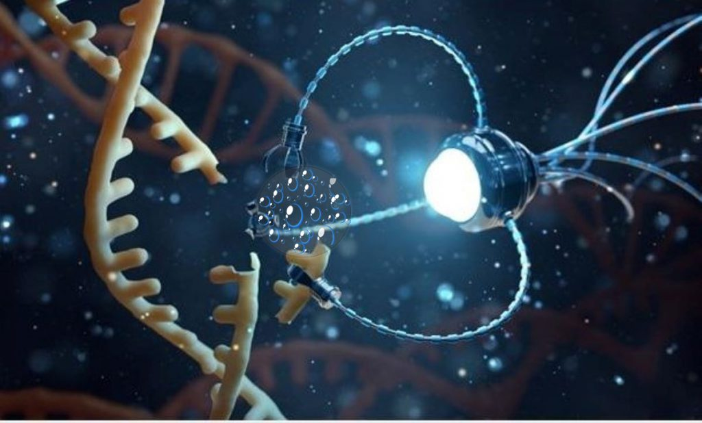
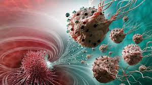
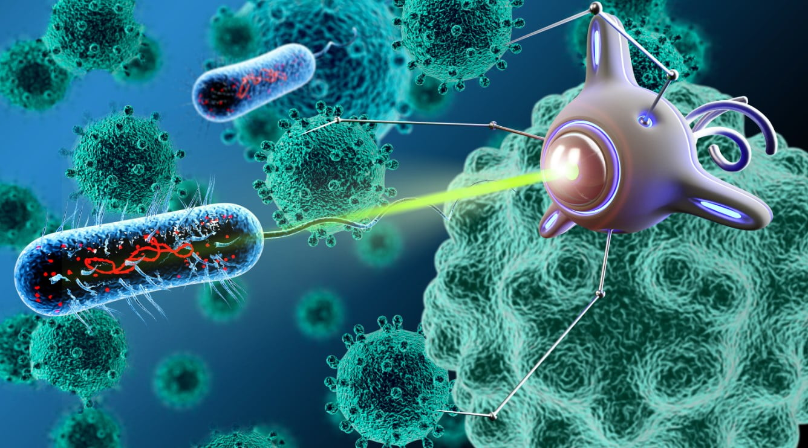

CCT dará ênfase à nanotecnologia e à indústria farmacêutica
Startup catarinense usa nanotecnologia para produzir defensivos agrícolas orgânicos

Nanotecnologia e DNA: Avanços na Medicina
Nanotecnologia na medicina: O que mudou na área médica?

A importância da nanotecnologia para a saúde - Portal IFSC

Quer saber o que a Nanotecnologia tem feito para a Medicina?